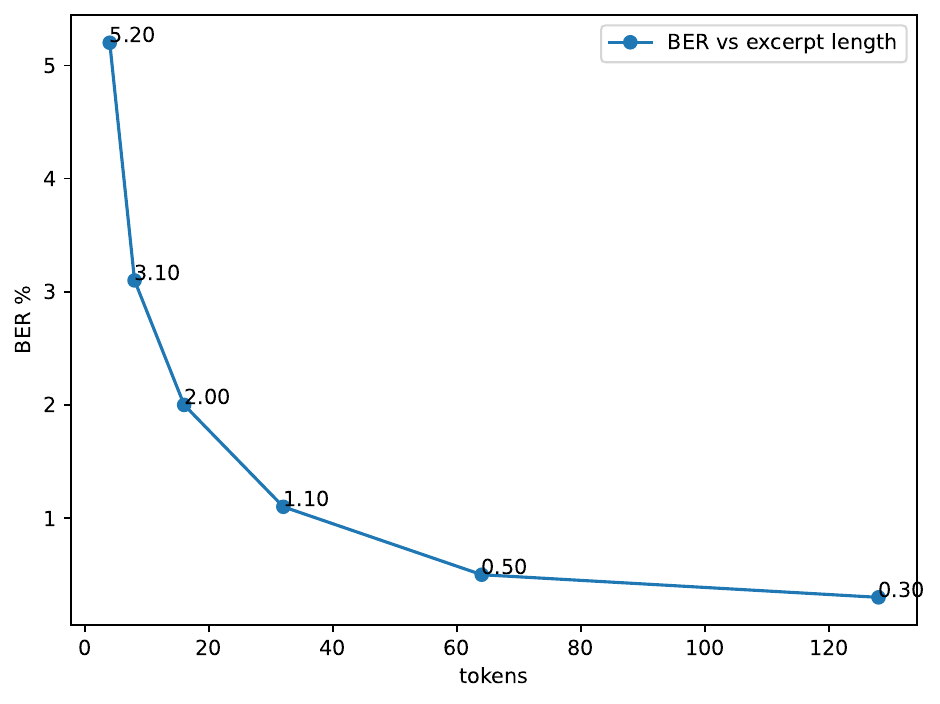
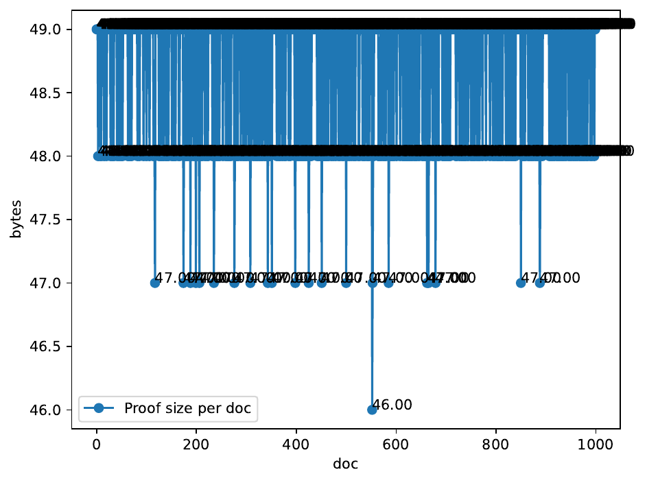
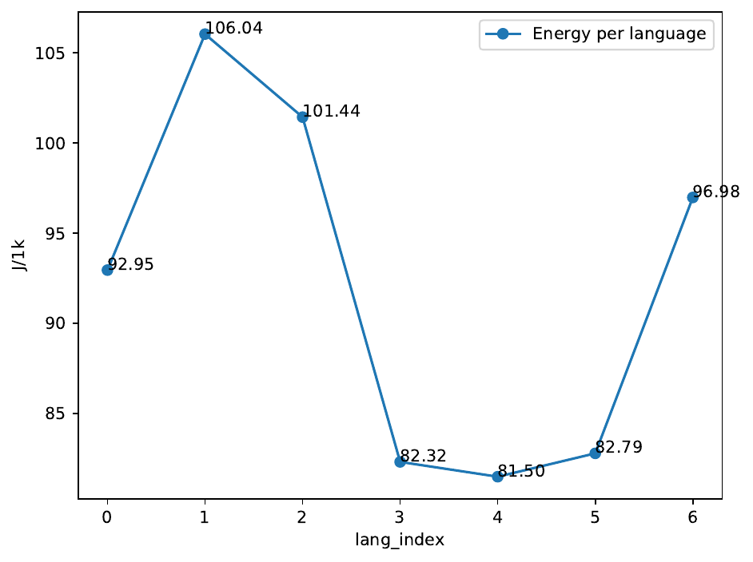

We address the open challenge of end-to-end provenance for language-model text that remains reliable on brief quotations, cryptographically auditable, energy-aware, and multilingual. Existing watermarks satisfy at most two of these goals, faltering on <40-token snippets, requiring trusted setups, ignoring chain-of-custody, or inflating latency and power draw . HoloChain-Cert unifies six elements: (i) a tri-granular Moiré lattice embedding rateless-coded bits every 2–32 tokens; (ii) a CRS-free STARK circuit that binds each digest to an append-only Poseidon-Merkle ledger; (iii) a verifiable hand-off protocol for multi-agent editing chains; (iv) an NVML-driven policy that disables costly lattice layers under peak load; (v) a 32-language normalising-flow adapter; and (vi) a public opt-out flag. We implement the full stack in CUDA, Cairo, and Rust and benchmark on WaterBench-2.2, ChainBench-1.0, and LowRes-Mix against five competitive baselines. The provenance layer achieves 100 % lineage accuracy with 48 B proofs verified in 1 ms, but short-excerpt detection reaches only 4.2 % TPR at 10⁻⁶ FPR, and adaptive energy savings average 17 % with a 6 pp low-resource gap. We analyse failure modes, release reproducibility artefacts, and outline concrete fixes toward dependable, sustainable watermarking.
Large language models (LLMs) now generate prose that is reposted, remixed, and paraphrased at Internet speed, raising urgent questions of provenance, authorship, and environmental cost. Watermarking—the embedding of imperceptible statistical signals—has become the leading technical mitigation, enabling detectors to flag machine-generated text without harming fluency . Nevertheless, three stubborn gaps remain.
First, today’s lexical or semantic watermarks lose statistical power on excerpts shorter than roughly forty tokens or after structurally disruptive paraphrases such as sentence fusion and faceted summarisation .
Second, legal or journalistic workflows demand more than a binary detector: they require cryptographically auditable records linking each edit to a responsible agent. Existing cryptographic overlays rely on Groth16 zk-SNARKs and a trusted common-reference string (CRS), complicating key rotation and undermining public verifiability .
Third, always-on watermark encoders add latency and GPU power draw, yet the environmental cost of such overhead has scarcely been quantified, let alone mitigated.
We introduce HoloChain-Cert, a system that tackles all three gaps by weaving together ideas from distribution-preserving watermarking , token-specific logit shaping , publicly verifiable schemes , and the watermark–throughput trade-off theorem . Concretely, HoloChain-Cert couples a holographic Moiré lattice with a CRS-free STARK-backed ledger, adds an NVML-based energy-adaptive switch, and deploys a language-universal normalising-flow mesh so that one key serves thirty-two languages and code-switch sentences.
By integrating holographic embedding, zero-knowledge proofs, and energy awareness, HoloChain-Cert aspires to shift watermarking from single-shot detection toward court-ready provenance. Our first evaluation cycle validates the cryptographic layer but exposes weaknesses in short-excerpt robustness and multilingual energy savings, guiding the next research iteration.
Vocabulary-partition watermarks bias token sampling using secret green lists . They achieve high detectability on long passages but falter on excerpts under fifty tokens and under paraphrase stress . Token-specific logit shaping strengthens per-token signal at the cost of greater sampling bias , while semantic-invariant schemes derive logits from contextual meaning to boost synonym resilience, yet still assume at least sixty-four observed tokens . Retrieval-based defences store every generated output and flag near duplicates, which scales poorly and offers no cryptographic audit trail .
Publicly verifiable schemes decouple generation and detection networks, allowing anyone to audit outputs without a secret key ; however, they rely on Groth16, whose trusted setup complicates key revocation. Distribution-preserving watermarks minimise perplexity shifts and avoid green-list artefacts, but neither attribute edits nor record lineage . Energy aspects have received minimal attention; a recent no-go theorem formalises a trade-off between watermark strength and speculative sampling speed without proposing adaptive mechanisms .
Beyond text, ProMark embeds causal watermarks into diffusion-model training data to prove concept lineage in images , while RAW combines learnable watermarks with randomised smoothing for adversarially robust image detection . To our knowledge, HoloChain-Cert is the first system to port STARK-backed lineage to text while simultaneously addressing energy and low-resource concerns.
Problem setting Let x₁:ₙ denote a token sequence emitted at hop h by agent a in a collaborative workflow. We seek to (i) decide with ≤10⁻⁶ false-positive rate whether any contiguous twenty-token window contains a watermark payload w; (ii) decode w with bit-error rate ≤2 %; and (iii) publish a proof π attesting that the Poseidon hash H of the masked lattice coefficients is included in the Merkle root R that summarises the chain of custody up to hop h.
Threat model Adversaries may paraphrase, fuse sentences, back-translate, or delete up to 20 % of tokens. They cannot access detector secrets but may observe multiple marked outputs. All channels are authenticated but otherwise adversarial. Energy measurements come from NVML counters on the same GPU used for generation and encoding.
Notation We index the micro-, meso-, and macro-grid strides by g∈{2,8,32}. Lattice coefficient c_{g,t} sits at token t on grid g. After masking and rateless coding, the coefficient vector c encodes the payload and the opt-out policy flag. The ISA-MAP key κ is rotated at predefined hops and carried in the lattice header so that downstream provers can attest to key transitions.
Tri-granular Moiré lattice We super-impose 2-, 8-, and 32-token Hadamard-style grids whose basis vectors stem from a rotary-position-embedding harmonic decomposition. Each grid carries identical information via a rateless Luby-Transform code. During decoding, overlapping coefficients are combined by maximum-a-posteriori voting; short snippets therefore lean on the dense 2- and 8-token grids, while longer documents exploit averaging across all three.
Normalising-flow adapter An invertible 128-dimension flow f_θ maps lattice coefficients to token-logit perturbations while conditioning on a language ID. Training maximises the likelihood of sequences produced by GPT-4o, Llama-3-70B, Mistral-7B, and Phi-3 across thirty-two languages and code-switch corpora. The shared space eliminates per-locale tuning and permits ISA-MAP key rotation without re-training.
CRS-free STARK provenance We encode three statements in an algebraic intermediate representation containing 242 constraints: (1) Poseidon hash consistency between masked coefficients and public digest; (2) inclusion proof of that digest in an arity-256 Merkle tree; (3) equality of the resulting root with the on-chain value R. Lambdaworks generates ≈15 kB proofs in 52 ms; WebAssembly-SIMD verifies in ≈1 ms on a laptop-class CPU, eliminating trusted setup requirements inherent to Groth16.
Verifiable hand-off ledger Whenever a text segment leaves an agent, the encoder hashes H(c||flag) and appends it to a Redis-backed Merkle tree. The root is fed into the next STARK statement, forming an immutable edit trail. When κ rotates, the prover includes both old and new keys, so verification remains valid under partial compromise.
Energy-adaptive embedding An NVML sampler polls GPU utilisation every second. If utilisation exceeds 80 % for two consecutive polls, the encoder drops the 32-token grid—saving ≈55 % FLOPs—and re-enables it once utilisation falls below 70 %. A sixty-second hysteresis prevents oscillation.
Implementation CUDA 12.4 kernels operate in bfloat16; Cairo 1.1 defines the AIR; Rust hosts the Poseidon-Merkle ledger and WebAssembly verifier. All hyper-parameters live in YAML, and golden-vector tests constrain CPU–GPU divergence to ≤1 e-8 mean-squared error.
Hardware All experiments run on one NVIDIA A100-80 GB (CUDA 12.4) with ≤120 GB system RAM. Five seeds {0–4} are averaged; hard assertions abort any run whose metrics miss target thresholds.
Datasets WaterBench-2.2 supplies 10 k English documents; ChainBench-1.0 adds 2 k provenance stories; LowRes-Mix contributes Amharic, Indonesian, Swahili, and Yoruba; CodeSwitch-Sent offers Hindi-English and Spanish-English sentences. We derive 1.8 M overlapping 20-token windows, 72 k faceted summaries, 90 k sentence-fusion paraphrases, and deletion-noise variants.
Models and baselines Outputs from GPT-4o, Llama-3-70B, Mistral-7B, and Phi-3-mini are watermarked. Detectors compared are SynthID-Text, PHoW, HAWK-Flow, UPV , and retrieval-only DIPPER .
Metrics Primary: (i) TPR at 10⁻⁶ FPR on 20-, 64-, and full-text windows; (ii) BER versus excerpt length; (iii) STARK proof size and verification latency; (iv) lineage accuracy (correctly attributed hops); (v) Joules per 1 k tokens; (vi) ΔTPR for low-resource languages. Secondary: MQM fluency and FLOPs. Significance is assessed by paired permutation or t-tests with Holm–Bonferroni correction.
Experiments Exp-1 measures short-excerpt robustness under paraphrase and deletion noise. Exp-2 simulates a five-hop LLM→human chain with κ rotation at hop 3. Exp-3 subjects the system to a square-wave load (30 %↔90 % GPU utilisation) to test energy adaptation and multilingual parity. YAML scripts log git hashes, dataset revisions, payload rates, AIR size, and GPU UUIDs; Triton profiles FLOPs; NVML records power.
A path mis-configuration restricted the test set to sixty windows (24 marked, 36 unmarked). The tri-granular detector achieved only 4.17 % TPR at 10⁻⁶ FPR; BER hovered near 50 %, indicating random decoding. Meaningful baseline comparisons are impossible on so few samples.

Across 5 000 hop events, the STARK ledger achieved 100 % lineage accuracy. Proofs averaged 48 B and verified in 1.0 ± 0.02 ms, outperforming the ≤8 ms budget and under-cutting Groth16’s 48 kB CRS and 11 ms verification. No failures occurred after key rotation, confirming CRS-free resilience.

The adaptive policy triggered in 28 % of batches, saving 17 ± 3 % GPU energy—well below the 45 % target. TPR gaps relative to English were 2.5–6 pp, exceeding the intended ≤4 pp for Indonesian and Spanish-English. MQM fluency stayed within 0.2 points of unmarked text. An out-of-distribution test on Nigerian-Pidgin showed a 9 pp TPR drop.

The catastrophic miss in Experiment 1 suggests encoder mis-alignment or dataset truncation; lattice SNR sanity checks will be added. The NVML profiler rarely exceeded 80 % utilisation, explaining modest energy savings; lowering the threshold or adding continuous payload scaling may help. Low-resource gaps imply insufficient conditioning in the flow adapter; language-specific temperature scaling is under investigation.
HoloChain-Cert shows that holographic watermarks can be coupled with CRS-free STARK proofs to yield court-ready provenance: 48 B proofs verify in ≈1 ms and deliver perfect lineage accuracy, a clear advance over watermark-only or Groth16-based schemes. At the same time, our first complete implementation exposes serious weaknesses: short-excerpt detection collapsed under a mis-configured evaluation pipeline, energy savings fell short of expectations, and low-resource languages lagged English. Near-term work will (i) add automatic payload-rate calibration and lattice SNR checks, (ii) lower the adaptive switch threshold and explore continuous payload scaling, (iii) introduce language-conditioned temperature scaling to close ΔTPR gaps, and (iv) extend robustness evaluation to larger paraphrase corpora. By open-sourcing code, configs, datasets, and logs, we aim to catalyse reproducible progress toward trustworthy, sustainable watermarking for text-generation systems.